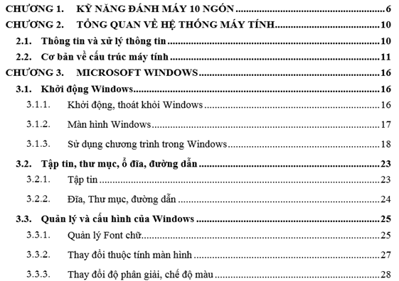

Bài tập Word 8
Giả sử cần có mục lục sau với nội dung chi tiết của từng mục lục đã có. Thực hiện các yêu cầu sau:
1. Nhập nội dung đã cho, không có định dạng. Vị trí trang của từng mục như mục lục đã cho.
2. Tạo 3 style có định dạng như dưới đây, đặt tên Level1, Level2, Level3:
CHƯƠNG 1. NỘI DUNG -> Level1
1.1. Mục con 1 -> Level2
1.1.1. Mục con 2 -> Level3
3. Gán 3 style đã tạo vào nội dung đã nhập ở câu 1
4. Tạo bảng mục lục ở trang sau
5. Cập nhật bảng mục lục:
Nhấn Ctrl + Enter để thay đổi số trang cho tài liệu àQuan sát bảng mục lục có thay đổi không
Cập nhật bảng mục lục, quan sát kết quả
